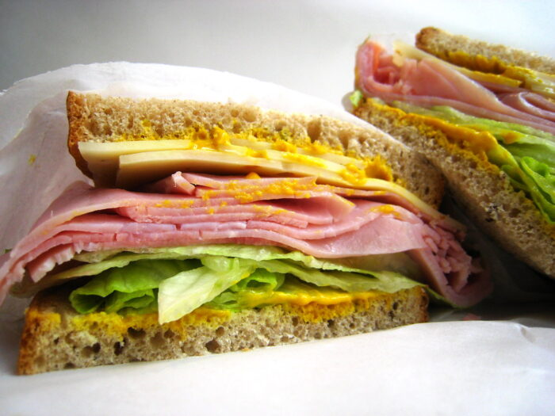

Journey through the GI tract
—Or, "The Alimentary Adventures of Ham & Swiss on Rye"
Note: this chapter is part of a guide on nutrition. You can view the whole guide here.
Ham and Swiss on rye is, well, one of the best things ever.
So we'll use this sandwich to track the digestive system. In this digestive adventure, the sandwich will be our hero.

Warning: This post is a work-in-progress. I'll continue to update it weekly, but for now, please excuse the mess.
A 30-second tour of the digestive system (aka the alimentary canal or GI tract)
Before we dive into more advanced stuff like hormones and neurotransmitters, let's take a quick look at the organs involved in the digestive process.
In order, they are:
- Mouth
- Pharynx (throat)
- Esophagus
- Small intestine
- Large intestine (colon)
- Rectum
- Anus
Food travels through each of those. However, there are three other organs which play supporting roles in the digestive system:
- Liver
- Gallbladder
- Pancreas
Let's review each organ, its location, and its function.
Mouth
When you bite into that delicious sandwich, your body begins to digest the food in two ways.
The first is by chewing, though the technical term for this is mastication. Chewing simply breaks down the food into smaller, more manageable chunks so it can later be absorbed. This process is called mechanical digestion, since there are no chemical processes at play. Chewing is, by far, the most pleasurable part of the digestive process.
The second is through several enzymes—most notably salivary amylase and lipase—which break down different nutrients through chemical digestion. For example, salivary amylase breaks down carbohydrates; if you've ever let a piece of bread or cracker sit on your tongue, you'll have felt the sensation of it being broken down without chewing. That's salivary amylase at work. But it only works so far: only about 20% of digestion of carbohydrates can be done in your mouth (and that assumes you actually chew slowly instead of wolfing it down). Lipase does the same thing for fat, but to a much lesser degree. We'll discuss enzymes later as we get deeper into the digestive tract.
Once food has been broken down in your mouth, it is called the bolus—which refers to partially chewed food until it reaches the stomach (more on that in a second).
Key point: Your mouth breaks down food in two ways. Mechanical digestion is done by chewing; chemical digestion is done by enzymes.
Pharynx (throat)
After chewing up that sandwich, you swallow. A funny thing about swallowing—and I promise to keep this PG—is that it is both a voluntary and involuntary act. While you voluntarily pass bolus to your pharynx, the act of swallowing is in fact involuntary. (That's why we are able to swallow while sleeping.)
Esophagus
Bolus travels down through the esophagus. During this time, a series of wavelike contractions—called peristalsis—moves the bolus into the stomach.
Stomach
Once the bolus reaches the stomach, gastrin is released. Gastrin is a hormone that does two things.
- Increases stomach motility. (This is a fancy term for "get the stomach moving.")
- Releases hydrochloric acid into the stomach.
Hydrochloric acid's main role is to break down food into smaller, soluble amounts. Once this happens, the bolus is no more; the newly formed semi-gelatinous ooze is now called chyme (pronounced kime).
(In addition to hydrochloric acid, proteins are broken down through a stomach enzyme called pepsin.)
Our stomach acids are no joke. They are highly acidic—roughly the same acidity as battery acid. It's so strong, in fact, that it can burn your skin. So it's a good thing our stomach doesn't (usually) leak!
From the mouth to the stomach, our bodies are focused on breaking down foodstuffs, with minimal absorption of nutrients. (That happens in the small intestine.)
Now the chyme moves on to the small intestine through the pyloric sphincter.
Small intestine
Unlike the stomach—which mainly digests food—the small intestine is mainly responsible for absorbing nutrients, which are then passed on to the liver for processing, and then into the bloodstream (which is also known as systemic, or general circulation).
The small intestine is further broken down into three segments:
- Duodenum (pronounced "doo - ah - duh -num" or "doo - oh - dee - um"));
- Jejunum (pronounced "juh - joo - num"); and
- Ileum (pronounced "il - e - um")
Most of the digestive hormones live in the duodenum.
Until now, your body has focused on breaking down food; now, it's time to start absorbing the nutrients.
But first, we need to put out the fire. Remember the hydrochloric acid that was released in the stomach? The stuff that has the same acidity as battery acid? Well, that bubbling cauldron is fine in the stomach—but anywhere else it's a problem.
So how does the small intestine deal with this fire? Simple. The hormone secretin calls on the pancreas and bile ducts to help. The pancreas—which we'll cover in a moment—releases a flood of bicarbonate, which neutralizes the hydrochloric acid and allows the small intestine to do its thing. Think of secretin as a firefighter; when there's a fire (in this case, stomach acid) the firefighter appears and extinguishes the fire using bicarbonate.
Put another way: while a firefighter puts out fires with water; secretin neutralizes acidity with bicarbonate.
In addition to secretin, the small intestine has other several hormones; cholecystokinin, gastric inhibitory polypeptide, and motilin.
Cholecystokinin (CCK) works alongside secretin. It is released in response to fat in the chyme and tells the liver to release bile, which is responsible for emulsification. Bile is like vinegar in a salad dressing: it mixes with oil (or in this case, the fat) to create an emulsification. In doing so, the fat clumps together, which increases the surface area of fat for enzymes (called lipases) to break down.
Gastric inhibitory polypeptide (GIP) tells the stomach to stop producing hydrochloric acid. That's where it gets its name; however, GIP does a lot more than that. It also increases insulin production (more on insulin later) and inhibits the absorption of water and electrolytes in the small intestine; the water and electrolytes are later absorbed in the large intestine.
Motilin increases gastric (stomach) and intestinal motility which helps chyme moves through the large intestine. Put another way: motilin keeps things moving.
As you can see, the small intestine is vital to digestion. It is the first part of the GI tract that primarily absorbs nutrients into the bloodstream. What is left over—primarily water, electrolytes, acids, and gases—is passed on to the large intestine.
Large intestine
Chyme travels from the small intestine to the large intestine through another ring-like sphincter called the ileocecal valve. (As you'll recall, there are sphincters throughout the GI tract: the lower-esophageal sphincter connects the esophagus to the stomach, and the pyloric sphincter connects the stomach to the small intestine.)
The large intestine is, unsurprisingly, larger than the small intestine. But it's much shorter than the small intestine: only about five to seven feet (compared to the small intestine, which can measure more than sixteen feet!).
The large intestine is made up of four parts:
- The cecum receives food from the small intestine. It's primarily responsible for absorbing electrolytes and water.
- The colon also absorbs electrolytes and any leftover water. There are four parts to the colon—the ascending colon, transverse colon, descending colon, and sigmoid colon—which form a U-turn from the body's left side to its right (using the anatomical view; see picture above). As you may have noticed, the colon is a part of the large intestine; they're not the same. You can use this bit of trivia at your next dinner party—your friends will love you for it.
- The rectum stores the leftovers. Unlike the colon, the rectum does not absorb any nutrients; they are strictly a storage facility. Because all nutrients have been absorbed, the chyme becomes stool.
- The anus excretes stool. Like all the other organ junctions, there's a sphincter: the anal sphincter.
And there you have it, folks. The digestive tract from end-to-end.
But wait! We haven't covered the pancreas, gallbladder, and—perhaps the most important of all—the liver.
Liver
The liver is, quite frankly, a badass.
Think of the liver as a bouncer. It reviews all nutrients your body has absorbed and decides whether to let them into your blood (called general circulation) or to further process it.
Not only that, the liver can also build up or break down nutrients as they come in. It can choose to store nutrients like carbs and fats (more on this later), break down them down for energy, or strip certain nutrients like protein for further processing.
In addition to its bouncing duties, the liver also secretes bile, which is stored in the gallbladder. Bile is a wonderful substance: it emulsifies fats so your body can digest them properly, eliminates old red blood cells, and detoxifies toxins before they enter your bloodstream. It's kinda cool looking, too.
Oh, the liver also synthesizes cholesterol, converts toxic ammonia into urea (which is safely excreted in the urine), regulates blood clotting, makes immune cells, removes pathogens, stores blood, makes ketones when carbs are unavailable... and many, many, more things.
But what makes the liver uniquely badass is its ability to regenerate. (No other organ can do this.) A liver can regrow to a normal size—even after up to 90% of it has been removed!
Gallbladder
The gallbladder stores bile produced from the liver and releases it into the small intestine to emulsify fat. It is the Robin to the liver's Batman.
Pancreas
The pancreas serves two functions: exocrine and endocrine. Roughly 98% of its cells are exocrine; these produce a bicarbonate base which is released into the small intestine in order to neutralize hydrochloric acid from the stomach. Remember, hydrochloric acid is very acidic; left unchecked it would run amok through your system. So the pancreas acts like a firefighter, ready to put out the fire whenever.
In addition to the exocrine cells, the pancreas's remaining 2% of cells are endocrine. This is a fancy way of saying that they produce hormones that travel throughout the body. These hormones help to regulate your blood sugar (thereby ensuring the brain gets enough glucose to function).
The main pancreatic hormones are:
- Insulin
- Glucagon
- Somatostatin
- Pancreatic lipase
- Pancreatic polypeptide
Insulin's